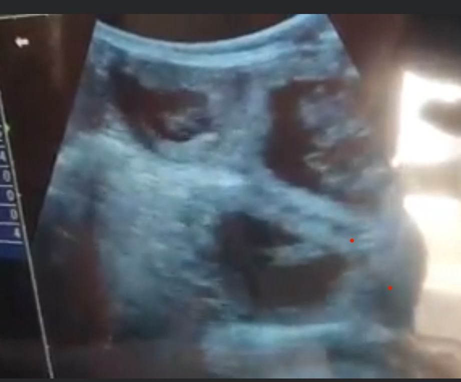

Julie’s Pet Pregnancy Scanning
Mobile Ultrasound Scans – Swansea • Neath • Port Talbot • Aberdare
Mobile Ultrasound Scans – Swansea • Neath • Port Talbot • Aberdare
Accurate ultrasound from 28 days • See exact number of puppies/kittens • Check heartbeats & development
From only £40 (travel included in most areas)
Book Your Scan – Call 07947 516036
| Dog Pregnancy Scan (1 dog) | £40 |
| Cat Pregnancy Scan (1 cat) | £40 |
| Additional dog/cat same visit | £30 each |
| Re-scan (same litter) | £30 |
Travel included for Swansea, Neath, Port Talbot, Aberdare & most surrounding areas.
Swansea • Neath • Port Talbot • Aberdare • Pontardawe • Gorseinon • Llanelli • Briton Ferry • Baglan • Margam • Glyncorrwg • Maesteg • Bridgend outskirts & everywhere in between.
Call or text Julie now – most scans booked same or next day!
📞 07947 516036